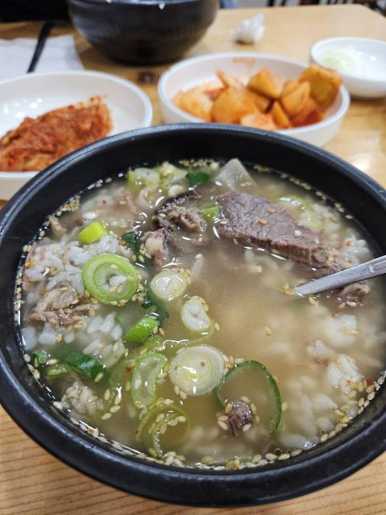

Local Foods
One of the biggest reasons why Cross-Country bicycling touring in South Korea is so enjoyable is because of the restaurants. In 2025, it is widely known that Korean style fried chicken menus are delicious. There are even more varieties of chains that serve fried chickens in Korea, and they each have their unique sauces. It is well worth trying out the fried chicken places while you are in Korea.
But wait. Fried chicken isn't everything about South Korean food. There are many options to choose from. When it comes to Korean food, the default setting is your ordered menu item coming with side dishes. The Korean style of meal presentation involves a bowl of rice and a variety of side dishes. One of the most famous side dishes is kimchi. You will find yourself almost always being served your food with kimchi on the side.
Famous Foods by Regions
Different regions have their own representative foods. Since this website is about bicycle touring, I will try to stick to the regions that a cycle tourer will likely pass through. Here are a few food options based on the article from https://tforest.tistory.com/23:
Seoul Special District (서울특별시)
Seolleongtang(Ox Bone Soup)
 Kimhs5400, CC BY 4.0, via Wikimedia Commons
Kimhs5400, CC BY 4.0, via Wikimedia Commons
Gomtang (Oxtail Soup)
 굿바이 조미료, CC BY 2.0 KR, via Wikimedia Commons
굿바이 조미료, CC BY 2.0 KR, via Wikimedia Commons
JangChung-dong Jokbal (pig's trotters)
 Korea.net / Korean Culture and Information Service (Photographer name), CC BY-SA 2.0, via Wikimedia Commons
Korea.net / Korean Culture and Information Service (Photographer name), CC BY-SA 2.0, via Wikimedia Commons
Gyeonggi Province (경기도)
양평해장국 (YangPyeong style Hangover Soup)
 image credits to 양평장터해장국 선지해장국맛집
image credits to 양평장터해장국 선지해장국맛집
막국수 (Makguksu or Spicy Buckwheat Noodles)
 Mobius6, CC BY-SA 4.0, via Wikimedia Commons
Mobius6, CC BY-SA 4.0, via Wikimedia Commons
냉면 (Cold noodles)
 Korea.net / Korean Culture and Information Service (Photographer name), CC BY-SA 2.0, via Wikimedia Commons
Korea.net / Korean Culture and Information Service (Photographer name), CC BY-SA 2.0, via Wikimedia Commons
ChungCheong Province (충청도)
꿩요리 (Pheasant dishes)
 image credits to visitkorea.or.kr article at: https://korean.visitkorea.or.kr/detail/rem_detail.do?cotid=e79e6c19-6f39-4598-b0f0-d2d6c680fbe6
image credits to visitkorea.or.kr article at: https://korean.visitkorea.or.kr/detail/rem_detail.do?cotid=e79e6c19-6f39-4598-b0f0-d2d6c680fbe6
메기매운탕 (Catfish Spicy Stew)
 image credits to junginfood.com recipe page at: https://junginfood.com/article/recipe/8/6/
image credits to junginfood.com recipe page at: https://junginfood.com/article/recipe/8/6/
연잎밥 (Yeonipbap or Lotus Leaf Rice)
 Korea Educational Broadcasting System, KOGL Type 1, via Wikimedia Commons
Korea Educational Broadcasting System, KOGL Type 1, via Wikimedia Commons
Gyeongsang Province (경상도)
따로국밥 (Ttarogukbap or Beef Soup and Rice)
 chomjong, CC BY 2.0, via Wikimedia Commons
chomjong, CC BY 2.0, via Wikimedia Commons
영덕대게 (Yeongduk Snowcrab)
 image credits to North Gyeongsang Province Homepage at: https://www.gb.go.kr/Main/open_contents/section/culture/page.do?mnu_uid=3710&srch_Area=&srch_Season=&srch_Producer=2&srch_Order=Rev&srch_Word=&keyword=food&F_Code=F_DLHX73134&cmd=2&
image credits to North Gyeongsang Province Homepage at: https://www.gb.go.kr/Main/open_contents/section/culture/page.do?mnu_uid=3710&srch_Area=&srch_Season=&srch_Producer=2&srch_Order=Rev&srch_Word=&keyword=food&F_Code=F_DLHX73134&cmd=2&
울진대게 (Uljin Snowcrab)
Jeolla Province (전라도)
떡갈비 (Tteokgalbi or grilled short rib patties)
 image credits to Namu wiki article at: https://namu.wiki/w/%EB%96%A1%EA%B0%88%EB%B9%84
image credits to Namu wiki article at: https://namu.wiki/w/%EB%96%A1%EA%B0%88%EB%B9%84
나주곰탕 (Naju style Oxtail Soup)

Naju style Oxtail Soup originated in the city of Naju.
세발낙지 (Three-legged Small Octopus)
 by LWY at flickr, CC BY 2.0, via Wikimedia Commons
by LWY at flickr, CC BY 2.0, via Wikimedia Commons
Gangwon Province (강원도)
강릉 초당두부 (Gangneung style Chodang Tofu)
 titanium22 (a flickr user), CC BY-SA 2.0, via Wikimedia Commons
titanium22 (a flickr user), CC BY-SA 2.0, via Wikimedia Commons
Jeju Island (제주도)
흑돼지 (Heukdwaeji or Jeju Black Pork)
 image credits to Jeju Island Homepage
image credits to Jeju Island Homepage
Other Options
The table provided on this page is by no means the exhaustive list of good food in Korea. There are so many good restaurants that you can stumble upon while in Korea. To find good restaurants in Korea, you must install Kakao Map or Naver Map and check the ratings before you go. I have provided the app download links on the Map page, but, if you do not wish to download the app on your phone, you can also access the web app versions of the maps at:
- map.kakao.com
- map.naver.com
Get out there and enjoy delicious Korean foods!
{kind=link}
{kind=link}
.jpg){kind=link}
{kind=link}
{kind=link}
{kind=link}
{kind=link}
{kind=link}
{kind=link}